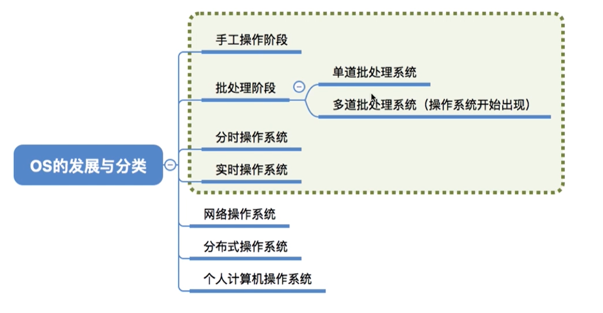

操作系统的发展 （三）
本文最后更新于：8 个月前
知识总览

手工操作阶段
计算机能识别二进制数（01），把数写在纸带机上，让计算机进行读取，处理之后，再输出纸带机上，最后输出。计算机的处理速度快，但是纸带机速度很慢，这样cpu空闲时间很多。另外，程序用纸袋机，这样不太方便。人机速度矛盾导致资源利用率低。
单道批处理阶段
引入脱机输入/输出技术（用磁带完成）并监督程序负责控制作业的输入/输出，速度比纸带机快很多。
单道批处理系统的优点：缓解了一定程度的人机矛盾，资源利用率有所提升。
缺点：内存中仅仅能有一道程序运行，只是该程序运行之后才能调入下一道程序。cpu还是有大量的时间空闲，资源利用虽然提高但是还是很低。
多道批处理阶段
还是利用磁带完成，但是是多道程序。操作系统正式诞生，并引入了中断技术，由操作系统负责管理这些程序的运行，各个程序并发执行。
优点：多道程序并发执行，共享计算机资源。资源利用率大幅度提升，cpu和其他资源保持忙碌状态，系统吞吐量增大。
缺点：没有人机交互，用户响应时间长（用户提交作业之后只能等待计算机处理完成，中间不能控制自己的作业执行）
分时操作系统
计算机以时间片为单位轮流的为各个用户/作业服务，各个用户可以通过终端与计算机进行交互。
缺点：不能优先处理一些紧急任务，操作系统对所有的用户和作业都是公平的，循环的为每个用户/作业服务一个时间片，不区分任务的紧急性。
实时操作系统
优先响应一些紧急任务，某些紧急任务不需要时间排队。
在实时操作系统的控制下，计算机接收到外部信号后及时进行处理，并且要在严格的时限内处理完事件。实时操作系统的主要特点是及时性和可靠性。
其他操作系统
网络操作系统
是伴随着计算机网络的发展而诞生的，能把网络中各个计算机结合起来，实现数据传送等功能，实现网络中各种资源的共享（文件的共享）和各台计算机之间的通信。
分布式操作系统
主要特点是分布性和并行性，系统中的各台计算机地位相同，任何工作都可以分布在这些计算机上，由它们并行/协同完成这个任务。
个人计算机操作系统
windows xp / MacOs 方便个人使用
回顾

本博客所有文章除特别声明外，均采用 CC BY-SA 4.0 协议 ，转载请注明出处！